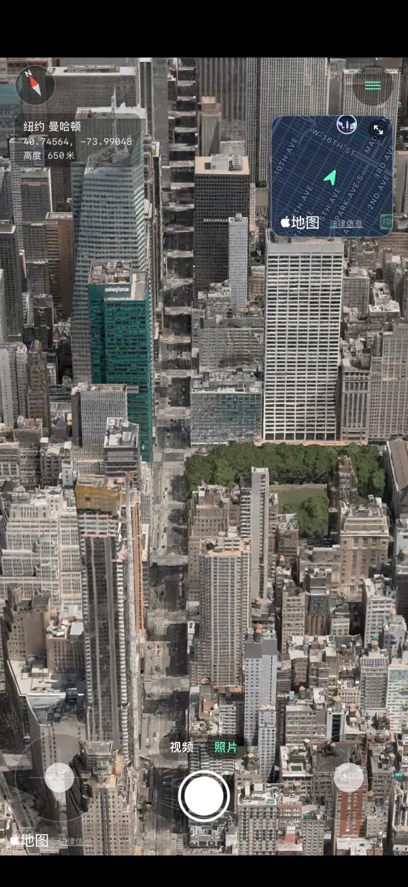
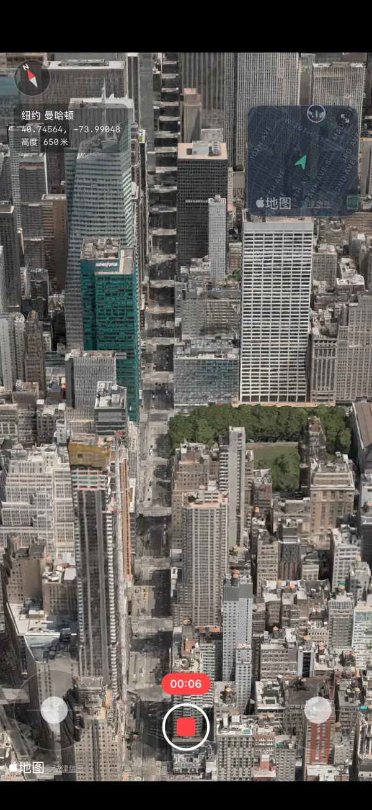
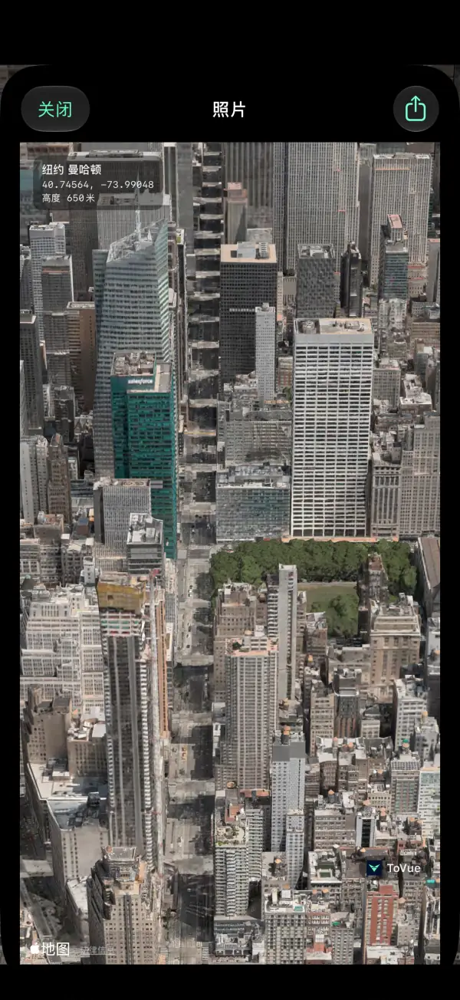
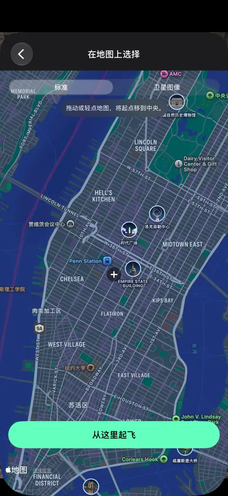
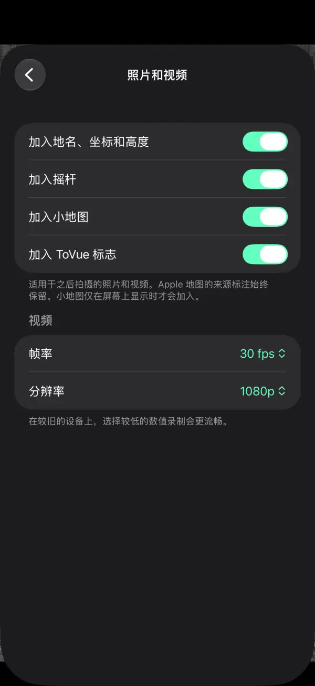

像无人机一样
飞越 3D 地图。
在 iPhone 和 iPad 上，从空中自由飞越世界各地的城市。
无论照片还是视频，都只留下地图本身，不含操控按钮。
 免费 · 无需注册 · 无需定位权限
免费 · 无需注册 · 无需定位权限功能
用摇杆飞行，把看到的风景原样留下。
自由飞行
用屏幕上的两个摇杆上升、转向和前进。单手模式下一根手指就能操作。
小地图
在右上角一眼看清当前位置和朝向。轻点即可在地图上选择目的地。
录制视频
像相机 App 一样在照片和视频之间切换，把飞行过程录下来。
纯地图照片
拍下不含操控按钮的画面，还可以加入地名、坐标和高度。
随处瞬移
搜索或在地图上选择地点，立即从那里的上空开始飞行。
支持 11 种语言
简体中文、繁体中文、英语、日语、韩语等 11 种语言。适用于 iPhone 和 iPad。
截图





价格
所有功能均可免费使用。不想看广告？一次购买即可。
基础版
免费
- 全部飞行、拍照和录像功能
- 横幅广告，以及移动后的全屏广告
- 照片和视频带有 ToVue 标志
移除广告和 ToVue 标志
一次性购买
- 只需购买一次，不是订阅
- 不再显示任何广告
- 可去掉照片和视频上的 ToVue 标志
使用须知
- ToVue 是虚拟地图浏览工具，不能操控真实的无人机，也不能用于导航或飞行规划。
- 3D 建筑和地形来自 Apple 地图，细节程度因地区而异。
- 需要连接互联网。ToVue 从不使用 GPS，也不会请求你的位置。
- 照片和视频上始终保留 Apple 地图的归属标识。
现在就去拍下空中的风景吧。
免费 · 无需注册 · 无需定位权限